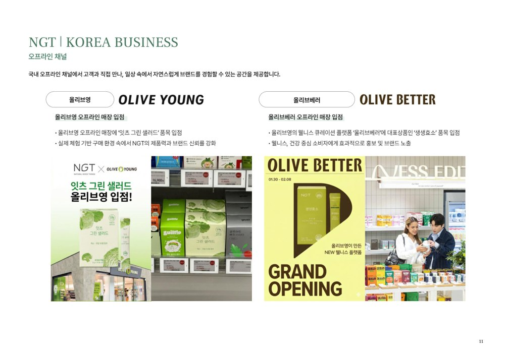
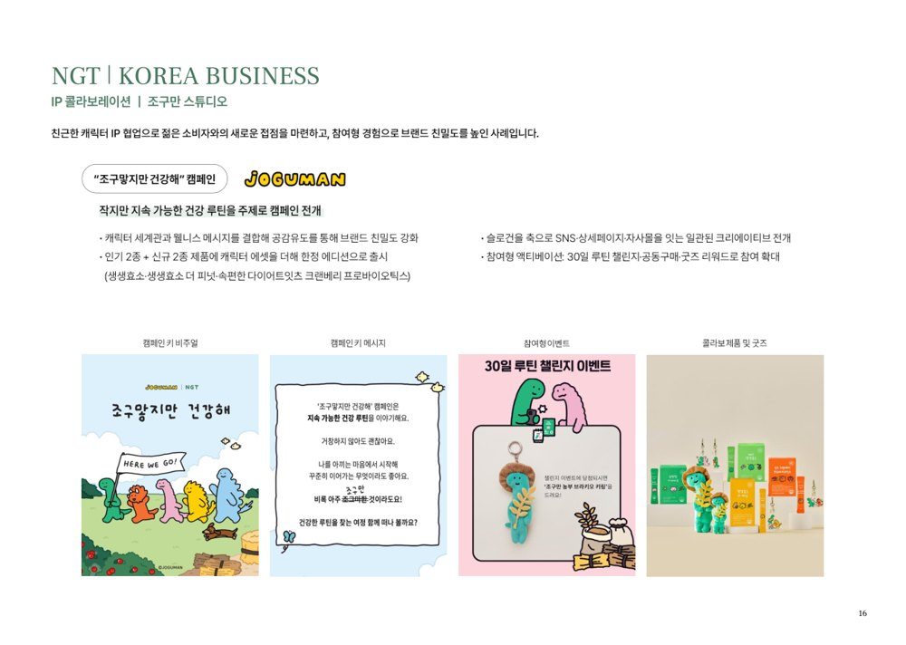
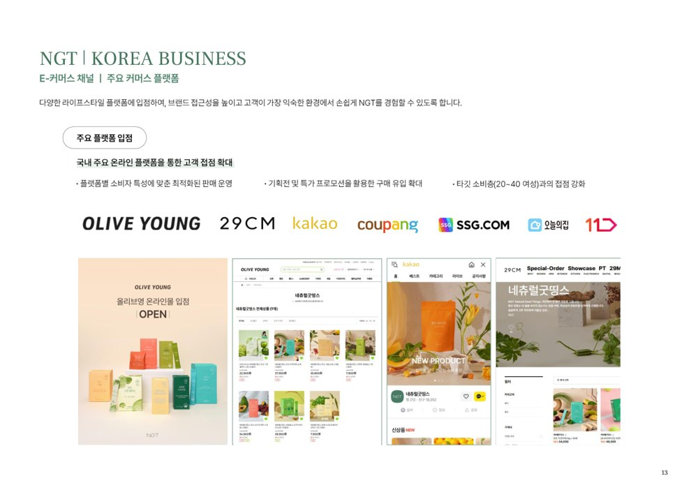

ONE-PAGER
수주 한 장
미팅(6/10) 직전 이 카드 하나면 된다. 아래는 인테이크·리서치 기반 가설 백업.
🎯 수주 한 장
그래서 진짜 니즈는 (가설)
대표가 말한 "온라인에서 NGT만의 팬덤·뾰족한 축"은 — 인플루언서·공동구매로 쌓은 인지도를 자사몰 브랜드 자산으로 전환하는 것. 7개 라인 30+ SKU·7개국으로 벌어진 메시지를 하나의 축으로 좁히고, 자사몰의 브랜딩·콘텐츠·광고·CRM을 유기적으로 연결해야 50억(하반기) 성장이 자생적으로 돈다.
그래서 우리가 해주는 것
① 브랜드 축 뾰족화 — "자사 발효공장·K-낙산균(국내 유일)·여성 생애주기"를 "데이터로 증명하는 이너케어"라는 한 줄 축으로. 마스터 브랜드 아키텍처 정리
② 자사몰 팬덤·CRM 시스템 — 인플루언서 인지도 → 자사몰 재구매·멤버십·구독 전환 구조 (효소 1위 충성고객 자산화)
③ 콘텐츠·광고·CRM 통합 IMC — 조구만 IP의 '일회성'을 자산화 구조로. 본 계정 콘텐츠 정상화 + 퍼포먼스 연결
첫 제안 & 다음 액션
T1 진단(1,500~2,000만 / 4주)으로 채널·LTV·브랜드 아키텍처 진단 → T2/T3 빌드 승급. 자생 성장 10년 = 외부 컨설팅 첫 케이스 가능성 → 단계적 흡수가 안전. 미팅서 채널별 매출 비중·재구매율·예산 청취가 1순위.
DIAGNOSIS (가설)
핵심 진단
제품·인증·글로벌은 이미 최상위. 비어 있는 건 "인플루언서 인지도 → 자사몰 자생 엔진" 전환과 "한 줄 브랜드 축". 상담 전 가설
효소 카테고리
7년 연속 1위
KCSI 2019~2025
글로벌
7개국
중·대만·일·몽·호·베·이
제품 라인
7라인 30+
효소·장·다이어트·여성…
시급 과제
온라인 팬덤
인플루언서 의존 → 자사몰 자산
Critical
인플루언서·공구 의존
성장을 인플루언서/공동구매가 견인 — 자사몰 팬덤·재구매·CRM 자생 엔진이 약함. 대표가 직접 짚은 1순위 과제.
High
메시지 산만 (30+ SKU)
7개 라인·30+ SKU·7개국 → "NGT가 뭐 하는 브랜드"인지 한 줄이 흐림. 효소·발효·여성 이너케어 중 핵심 축 미확정.
High
캠페인의 일회성
조구만 IP 콜라보 = 인지도엔 기여하나 자산화·팬덤 연결 실패(대표 자가진단). 캠페인→CRM 연결 구조 부재.
진단 결론 (가설)매출이 169억(2022)→135억(2023)으로 꺾인 것(공시)이 "다음 성장축 부재"를 뒷받침. 강점(자사 발효공장·K-낙산균 국내 유일·여성 생애주기 라인업)을 "데이터로 증명하는 이너케어"라는 한 축으로 좁히고, 자사몰 콘텐츠·광고·CRM을 통합하면 — 인플루언서 인지도가 브랜드 자산으로 쌓이고 하반기 50억이 자생적으로 돈다. 핵심은 "채널 확장"이 아니라 "팬덤 구조".
COMPANY & SIGNALS
기업 · 정량 시그널
10년 자생 성장·자사 원료공장·효소 1위 — HIZ 풀에서 가장 스케일 큰 D2C 잠재 계약.
기업 기초
법인 / 대표
(주)네츄럴굿띵스 · 김수안(Sandy)
설립
2016 (10년차) · 자생 성장(부트스트랩)
거점
마포 본사(NGT빌딩) + 청주 자사 원료공장(2020)
조직
인테이크 11명(영업4·브랜딩2·디자인2·제품개발2·경영지원1) / 공시 31명 ⚠️ 차이 확인
그룹사
제조전문(2000)·건기식(2010)·NGT(2016) 파트너십
인증
ISO22000·HACCP·여성기업·벤처·글로벌강소기업1000+
정량 시그널 (값 · 출처)
| 매출 추이 | 169억(2022)→135.4억(2023) 감소 사람인·인크루트 / 하반기 목표 50억 인테이크 |
| 효소 1위 | KCSI 7년 연속(2019~2025) 소개서 |
| 자사몰 베스트셀러 | 속편한 다이어트 100포 ₩161,900 · 가격 ₩16,900~166,500 · 1,000+ 리뷰·멤버십 자사몰 직접확인 |
| 핵심 원료 | 곡물발효효소·K-낙산균(국내 유일·특허) 소개서 |
| 글로벌 | Halo Mavis 대만 라이브 4회 25만개(25.11 본사방문 5종) PR Newswire · 일 코스메키친 5종 · IG @official.ngt |
동명 · 네이밍 체크"Natural Good Things / NGT" 자체 명확 식별, 동명 충돌 없음. 단 한·영문 브랜드 표기·SKU명(잇츠·생생효소 등) 통일 점검은 글로벌 단계 의제. 미팅 확정 설립일(소개서 2016-10 vs 공시 2016-09)·조직 규모(인테이크 11명 vs 공시 31명)·매출 둔화(169억→135억) 원인.
직접 리서치 캡처 — 자사몰 · 정량
자사몰 메인

매출 추이
📉
사람인·인크루트 기업정보
PRODUCT & CHANNEL
제품 · 채널
자사 발효 원료 기반 7개 라인. 채널은 국내 풀커버 + 글로벌 7개국 — 폭은 넓으나 "축"이 필요.
| 라인 | 대표 제품 | 핵심 |
|---|---|---|
| 소화효소 (주력) | 생생효소 시리즈·속편한 다이어트 | 자사 곡물발효효소(푸드자임)·글루텐분해 · 효소 1위 |
| 장건강 | 생생낙산균·잇츠차전자피 | K-낙산균 국내 유일 직접 배양 |
| 다이어트 | 잇츠버닝·오늘은컷·잇츠톡 등 | 정제/분말/젤리 다형태 (SKU 다수) |
| 여성건강·붓기 | 잇츠브이·잇츠시톨·잇츠크랜베리·잇츠라인 | 호르몬·Y존·순환 (여성 생애주기) |
| 슬로우에이징·이뮨·에너지 | 유기농 레몬즙/올리브오일·오늘은맑음·잇츠부스터 | 항산화·면역·활력 (확장 라인) |
채널 (국내 풀커버 + 글로벌)
채널 인벤토리국내 자사몰(naturalgoodthings.com)·네이버 스마트스토어·쿠팡·29CM·올리브영(온/오프 '잇츠그린샐러드'·올리브베러 '생생효소')·공영홈쇼핑·신세계/롯데면세·쇼핑라이브(네이버·카카오)·SNS 공동구매 · 글로벌 중국(T몰글로벌·샤오홍슈·공구단장)·대만(라이브커머스)·일본(코스메키친 전용5종)·몽골·호주·베트남·이탈리아 · IG @official.ngt
🎤 진단 포인트: 채널은 이미 넓다. 비어 있는 건 "자사몰이 팬덤·재구매의 허브가 되는 구조". 채널별 매출 비중·자사몰 LTV가 미팅 1순위 청취.
🎤 진단 포인트: 채널은 이미 넓다. 비어 있는 건 "자사몰이 팬덤·재구매의 허브가 되는 구조". 채널별 매출 비중·자사몰 LTV가 미팅 1순위 청취.
직접 리서치 캡처 — SNS · 베스트셀러
인스타 현황
📸
@official.ngt 그리드 캡처
베스트셀러

글로벌 PR

COMPETITION & MARKET
경쟁 · 시장 · 유사 케이스
여성 이너케어·이너뷰티 시장 성장 + 올리브영 W케어 등 대형 진입. "데이터·발효 원료"가 NGT의 방어선.
경쟁 지형 (가설)
| 경쟁 | 포지션 | NGT 시사점 |
|---|---|---|
| 풀무원녹즙·종근당건강 | 대기업 이너뷰티·건기식 | 규모는 밀리나 "자사 발효 원료·효소 1위" 전문성으로 차별 |
| 랭킹닭컴·닥터키친 | 다이어트·여성 식단 D2C | D2C 운영·팬덤 구조 벤치마크 |
| 올리브영 W케어 라인 | 유통 거인 신규 진입 | 위협 카테고리 잠식 — 브랜드 자산·직접 관계가 방어선 |
유사 케이스 매핑 (HIZ 케이스 풀)
| 케이스 | 인접도 | 시사점 |
|---|---|---|
| 위타민(우르실) / 리솔츠 | 가장 가까움 | 자체 R&D + 자사몰 + 글로벌 진출 시점 구조 거의 동일. NGT는 1~2단계 위(매출·글로벌 검증) |
| 케어비네스트 / 절대콜라겐 | 가까움 | 건기식 D2C 멀티채널 — 비즈모델 일치 |
| 레베로 / 마키노차야 | 인접 | 지속가능·웰니스 정체성·콘텐츠 시스템 측면 |
직접 리서치 캡처 — 경쟁사 현황
경쟁사 진입
⚔️
올리브영 W케어 라인
D2C 벤치마크
🏷️
랭킹닭컴·닥터키친
시장 시사여성 이너케어 = "데이터·성분 신뢰" + "지속 루틴(구독)"이 승부처. NGT의 자사 발효공장·K-낙산균·효소 1위는 경쟁사가 따라올 수 없는 신뢰 자산 — 이걸 콘텐츠·CRM으로 "보이게" 만드는 게 핵심.
SWOT & NEEDS
SWOT · 니즈 (SPIN + JTBD)
표면 = "온라인 팬덤·뾰족한 축". 진짜 = 인플루언서 인지도를 자사몰 자생 엔진으로 전환하는 IMC 구조. 상담 전 가설
Strengths
- 자사 원료공장·K-낙산균(국내 유일)·곡물발효효소 R&D
- 효소 7년 연속 1위·100M 사쉐·인증 다수
- 글로벌 7개국·면세·홈쇼핑·올영 채널 자산
Weaknesses
- 인플루언서·공구 의존, 자사몰 팬덤·CRM 약함
- 30+ SKU·7개국 → 브랜드 메시지 산만
- 캠페인(조구만 IP) 일회성, 자산화 미연결
Opportunities
- 여성 이너케어·구독 시장 성장
- 효소 1위 충성고객 → 자사몰 팬덤·LTV 전환 여지
- 발효·K-낙산균 = "데이터 이너케어" 축 선점 가능
Threats
- 올리브영 W케어 등 대형 진입
- 인플루언서 단가 인상·공구 피로
- 글로벌 다중 채널 동시 = 운영 SOP 과부하
Pain Hierarchy (가설 · 표면→근본)
L1 표면 "온라인 팬덤·뾰족한 축이 필요"(대표 명시) → L2 전술 자사몰 콘텐츠·CRM이 인플루언서 인지도를 못 받음 → L3 전략 30+ SKU·7개국에 한 줄 브랜드 축이 없음 → L4 근본 인플루언서·공구 의존 = 자사몰 자생 성장엔진(재구매·구독·팬덤) 부재
표면 vs 진짜 니즈 (가설)표면 = "브랜딩 방향성 정리". 진짜 = 브랜딩 + 마케팅 통합 IMC — ①브랜드 축 뾰족화 ②자사몰 CRM·팬덤 시스템 ③콘텐츠·광고 연결. 대표도 "브랜딩과 마케팅을 따로 보지 않는 뾰족한 축"을 직접 기대 → 니즈-서비스 핏 매우 높음.
FIT & ESTIMATE
기회 평가 · 견적 (가설)
종합 기회 적합도 (상담 전 추정)
4.4 / 5.0
✅ GO — 대표 본인 신청·매출 규모·니즈핏 강함. 감점: 외부 컨설팅 첫 케이스 흡수력 + 글로벌 SOP 범위
적합도 (가중)
| 니즈-핏 30% | 5 | 브랜딩+마케팅 통합 IMC = 코어 |
| 예산 20% | 4 | 매출 169억 흡수력 충분·미확정 |
| 의사결정 15% | 5 | 김수안 대표 본인 신청 |
| 긴급도 15% | 4 | 하반기 50억 목표 |
| 성장·레퍼런스 20% | 4 | 글로벌·카테고리 1위 레퍼런스 |
리스크 5종 · GO 분기점
| 의사결정 | ✅ 대표 본인 |
| 예산 흡수 | ✅ 169억·단계화 권장 |
| 카테고리 핏 | ⚠️ 글로벌 SOP 범위는 2개국 압축 |
| 동명 | ✅ 충돌 없음 |
| 운영 흡수력 | ⚠️ 외부 컨설팅 첫 케이스 가능성 |
HIZ Tier 기준선 → 3-Tier 견적 (초안)
| Tier | 기준 단가 | 본 건 |
|---|---|---|
| T0 / T1 | 100~300 / 500~1,500만 | T1 진단 1,500~2,000만(권장 입구) |
| T2 Build | 2,000~5,000만 | 자사몰 IMC·CRM 빌드(추천) |
| T3 Scale | 7,000만+ | 글로벌·신규 카테고리 풀스택 |
🟢 T1 · 진단
채널·LTV·브랜드 아키텍처 진단 (입구)
1,500~2,000만
4주
- 채널별 매출·자사몰 LTV 분해
- 브랜드 축·메시지 진단
- 콘텐츠·CRM 갭 인벤토리
추천
🔵 T2 · 빌드
자사몰 팬덤·CRM·콘텐츠 IMC
3,000~5,000만
3개월
- T1 진단 +
- 브랜드 축 뾰족화·메시지 체계
- 자사몰 CRM·멤버십·재구매 구조
- 본 계정 콘텐츠 시스템 + 퍼포먼스 연결
- 인플루언서→팬덤 전환 설계
🟣 T3 · 스케일
글로벌·신규 카테고리 풀스택 (앵커)
7,000만+
6~12개월
- T2 전체 +
- 글로벌 콘텐츠 SOP(2개국 우선)
- KOL 매트릭스(Halo Mavis 모델 확장)
- 신규 카테고리 런칭 캠페인
패키징 원칙자생 성장 10년 = 외부 컨설팅 첫 케이스 가능성 → T1 진단으로 입구, 흡수력 확인 후 T2/T3 승급이 안전. 글로벌 4개국 동시는 HIZ SOP 범위 초과 → 우선 1~2개국 압축 합의.
MEETING PREP
상담 준비 (6/10 미팅)
톤: 10년차 카테고리 1위 대표 = 막연한 "브랜딩" 화법 금지, 근거·데이터·레퍼런스. 제품·성과 인정 후 "다음 축"으로 프레임.
🎤 아이스브레이킹"효소 7년 연속 1위에 자사 발효공장·K-낙산균까지 — 국내에 이만한 이너케어 전문성을 가진 브랜드가 드뭅니다. 그런데 그 신뢰가 자사몰·콘텐츠에서는 아직 '팬덤'으로 안 쌓이고 인플루언서에 묶여 있는 게 보였어요." → 즉시 신뢰 + 진짜 과제 합의.
반드시 물어볼 질문 5개
Q1 · 채널별 매출 (1순위)
"자사몰 vs 오픈마켓(쿠팡·29CM·네이버) vs 공구·인플루언서 vs 글로벌 매출 비중과 추이는? 자사몰 재구매율·LTV는 어느 정도세요?"
L4(자생 엔진) 검증 + T1 진단 방향
Q2 · 브랜드 축 / 아키텍처
"30+ SKU를 'NGT 마스터 브랜드' 하나로 가실지, 효소·여성건강 등 서브 축으로 나누실지? '한 줄로 NGT는 무엇'을 뭐라고 답하고 싶으세요?"
메시지 산만(L3) — 뾰족한 축의 핵심
Q3 · 인플루언서 → 팬덤
"공구·인플루언서로 들어온 고객이 자사몰 단골로 남나요? 조구만 IP 같은 캠페인이 매출·구독으로 이어진 비중은?"
아쉬웠던 사례(자산화 실패) 직접 확인
Q4 · 글로벌 우선순위
"7개국 중 6개월 무게를 둘 곳은? 자체 운영 vs 현지 파트너 vs 라이브커머스 비중과 로드맵은?"
SOP 범위 — 2개국 압축 합의 / T3 판별
Q5 · 예산 · 조직 · 기대
"월 마케팅 예산 규모와 의사결정 구조(대표 직결 vs 팀 위임)? 11명 중 마케팅·콘텐츠 인하우스 구성은? 컨설팅 6~12개월 1순위 기대는?"
Tier 적합도 + 외부 컨설팅 흡수력
예상 반론 대비"우린 이미 잘 팔린다" → "맞습니다, 그래서 더 — 인플루언서가 식거나 올영 W케어가 들어오면 받칠 자사몰 자산이 필요합니다." · "내부에서 한다" → "11명이 제품·글로벌·공구까지 도는 구조에 팬덤·CRM·콘텐츠 시스템을 동시에 얹기는 어렵습니다 — 설계는 저희, 운영은 내부 분업." · "컨설팅 처음이라" → "그래서 T1 진단부터. 큰 약정 전에 채널·LTV를 데이터로 먼저 봅니다."
상담 후 액션당일 24h — 감사 + 핵심 3줄(브랜드 축·자사몰 팬덤·통합 IMC) + 미확인 5변수(채널 매출·재구매율·예산·글로벌 우선순위·조직) 기록 → T1 진단 범위서 + 견적 발송, 착수 일정 제안.
SOURCES
참고 출처
① 클라이언트 제공 ② 직접 리서치(라이브 확인 2026-06-10).
① 클라이언트 제공인테이크 메일(김수안 대표 사전질문 답변, 2026-06-09) · NGT 회사소개서 2026 (33p)
② 직접 리서치 (2026-06-10 확인)
자사몰 naturalgoodthings.com(베스트셀러·가격·멤버십·리뷰 직접 확인) ·
사람인·인크루트 기업정보(매출 169억→135.4억·직원 31명·설립 2016-09) ·
PR Newswire / Laotian Times(Halo Mavis 대만 라이브 4회 25만개, 25.11) ·
NutraIngredients-Asia(2024-10 CEO 인터뷰, 아시아 확장) ·
IG @official.ngt(팔로워 수는 로그인 필요·미확인) ·
기존 리서치 prep/naturalgoodthings.md(2026-05-14) 교차참조